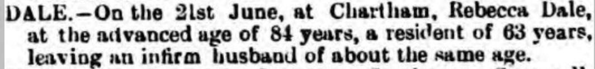
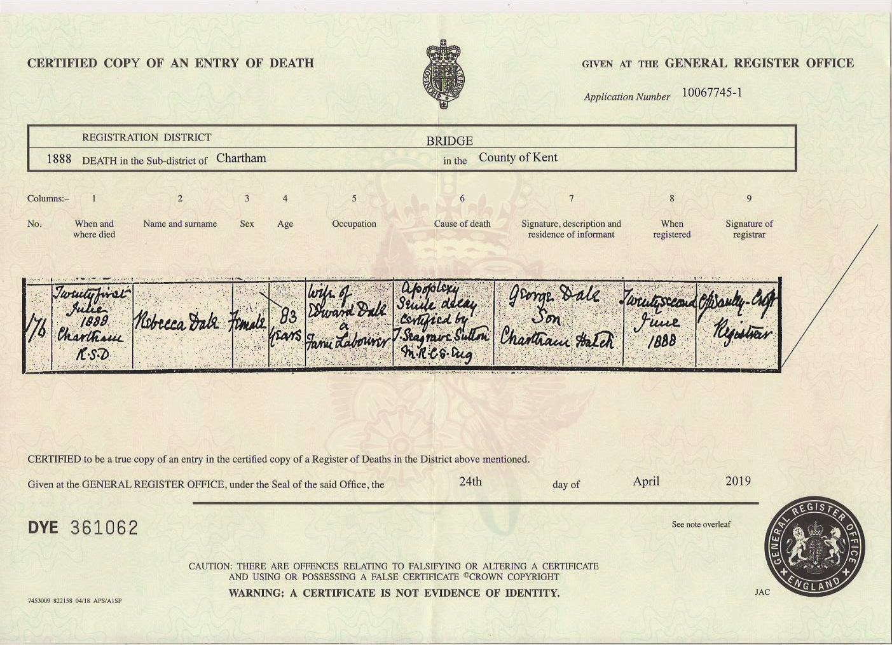
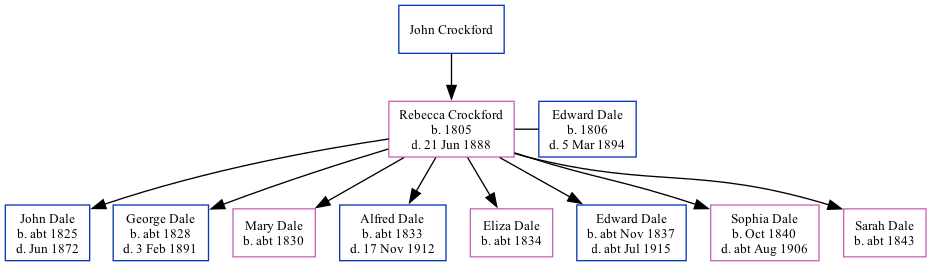

Rebecca Dale (née Crockford) 1805 - 1888
[ Home ] | [ Calendar ] | [ Surnames Index ] | [ Family History ]The child of John Crockford, Rebecca Crockford, the 3 times great-grandmother of <a href="I1.html">Nigel Horne</a>, was born in Ulcombe, Kent, England in 1805<span class="citation">1,2,3,4,5,6,7</span> and married Edward Dale (an agricultural laborer with whom she had 8 children: <a href="I167.html">John</a>, <a href="I58.html">George</a>, <a href="I2705.html">Mary</a>, <a href="I2690.html">Alfred</a>, <a href="I2706.html">Eliza</a>, <a href="I168.html">Edward</a>, <a href="I165.html">Sophia</a> and <a href="I166.html">Sarah Ann</a>) at St Mary Northgate, Canterbury, Kent, England on Jun 17, 1825<span class="citation">8</span>.</p><p>Rebecca spent all of her life in Kent, England. Throughout her life, she lived in several places around the county: in Chartham Hatch on Jun 6, 1841<span class="citation">11</span> and on Mar 30, 1851<span class="citation">12</span>; at Mount Pleasant, Chartham on Apr 7, 1861<span class="citation">13</span>; in Chartham in 1871<span class="citation">4</span>; and at The Green, Chartham on Apr 3, 1881<span class="citation">14</span>. <p>She died on Jun 21, 1888 in Chartham, Kent<span class="citation">6</span> (apoplexy and senile decay) and was buried there at St Mary's Church, Church Lane on Jun 25, 1888<span class="citation">9,10</span>.
Parents
Children
- John was born c. 1825
- George was born c. 1828
- Mary was born c. 1830
- Alfred was born c. 1833
- Eliza was born c. 1834
- Edward was born c. Nov 1837
- Sophia was born in Oct 1840
- Sarah Ann was born c. 1843
Citations
- 1841 England Census Online publication - Provo, UT, USA: The Generations Network, Inc., 2006.Original data - Census Returns of England and Wales, 1841. Kew, Surrey, England: The National Archives of the UK (TNA): Public Record Office (PRO), 1841. Data imaged from the National
- 1851 England Census Online publication - Provo, UT, USA: The Generations Network, Inc., 2005.Original data - Census Returns of England and Wales, 1851. Kew, Surrey, England: The National Archives of the UK (TNA): Public Record Office (PRO), 1851. Data imaged from the National
- 1861 England Census Online publication - Provo, UT, USA: The Generations Network, Inc., 2005.Original data - Census Returns of England and Wales, 1861. Kew, Surrey, England: The National Archives of the UK (TNA): Public Record Office (PRO), 1861. Data imaged from the National
- 1871 England Census Online publication - Provo, UT, USA: The Generations Network, Inc., 2004.Original data - Census Returns of England and Wales, 1871. Kew, Surrey, England: The National Archives of the UK (TNA): Public Record Office (PRO), 1871. Data imaged from the National
- 1881 England Census Online publication - Provo, UT, USA: The Generations Network, Inc., 2004. 1881 British Isles Census Index provided by The Church of Jesus Christ of Latter-day Saints © Copyright 1999 Intellectual Reserve, Inc. All rights reserved. All use is subject to the
- England & Wales, FreeBMD Death Index: 1837-1915 Online publication - Provo, UT, USA: The Generations Network, Inc., 2006.Original data - General Register Office. England and Wales Civil Registration Indexes. London, England: General Register Office. © Crown copyright. Published by permission of the Cont
- Kent, Canterbury Archdeaconry burials 1538-1988 - Findmypast
- Public Member Trees Online publication - Provo, UT, USA: The Generations Network, Inc., 2006.Original data - Family trees submitted by Ancestry members.Original data: Family trees submitted by Ancestry members.
- Kent, Canterbury Archdeaconry burials 1538-1988 - Findmypast
- England Deaths & Burials 1538-1991 - Findmypast
- 1841 England, Wales & Scotland Census - Findmypast (was age 25)
- 1851 England, Wales & Scotland Census - Findmypast (was age 45 and the wife of the head of the household)
- 1861 England, Wales & Scotland Census - Findmypast (was age 56 and the wife of the head of the household)
- 1881 England, Wales & Scotland Census - Findmypast (was age 76 and the wife of the head of the household)
Media
Canterbury Journal, Kentish Times and Farmers' Gazette June 30, 1888

Rebecca Crowford - death certificate

Canterbury Marriages Transcription - GBPRS-CANT-M-97175529-1
Kent, Canterbury Archdeaconry marriages 1538-1928 - GBPRS/CANT/M/97175529/2
England & Wales deaths 1837-2007 - BMD/D/1888/2/AZ/000078/213
Kent, Canterbury Archdeaconry burials 1538-1988 - GBPRS/CANT/D/95596106
1881 England, Wales & Scotland Census - GBC/1881/0004705686
1871 England, Wales & Scotland Census - GBC/1871/0014163572
1861 England, Wales & Scotland Census - GBC/1861/0003418071
1851 England, Wales & Scotland Census - GBC/1851/0005785493
1841 England, Wales & Scotland Census Transcription - GBC-1841-0014002931
England Deaths & Burials 1538-1991 - R_277188693
Family Tree
Generated by Ged2Site. Last updated on Jul 20, 2025